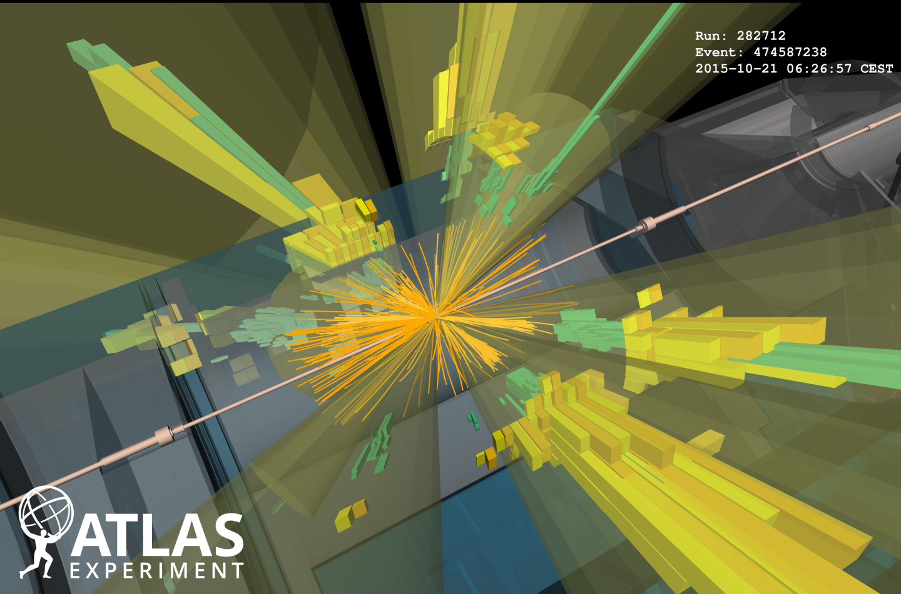
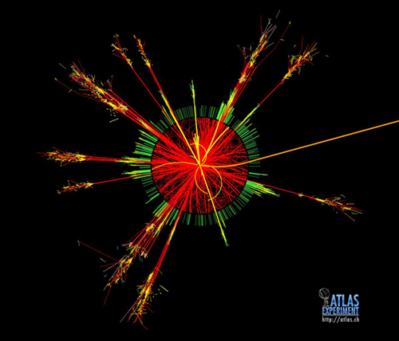
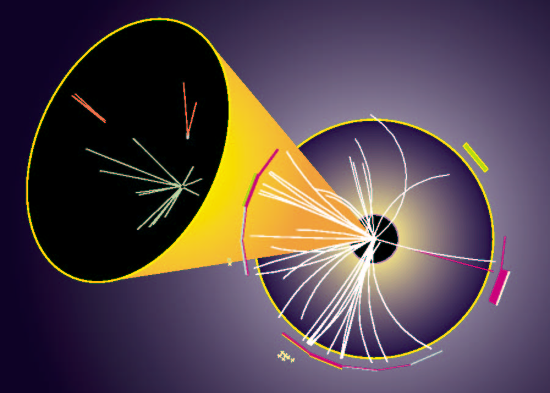

William Fawcett's Publications
Publications
All the links you could want
A search for an unexpected asymmetry in the production of e+mu- and e-mu+ pairs in proton-proton collisions recorded by the ATLAS detector at s√=13 TeV

This paper present a completely novel approach to searching for new physics, exploiting the combination of charge-flavour symmetry, which would appear to be conserved in the Standard Model. Wait and see if that assumption is really true!
ATLAS Collaboration
ATLAS-CONF-2021-045
[Paper]
The ABC130 barrel module prototyping programme for the ATLAS strip tracker
 As part of the Phase-II upgrade of the ATLAS detector, a new silicon inner detector will be constructed.
The future ATLAS strip tracker will include 118,000 silicon sensor modules in total.
This paper gives an overview of the components used in ABC130 barrel modules, their assembly procedure and findings resulting from their tests.
As part of the Phase-II upgrade of the ATLAS detector, a new silicon inner detector will be constructed.
The future ATLAS strip tracker will include 118,000 silicon sensor modules in total.
This paper gives an overview of the components used in ABC130 barrel modules, their assembly procedure and findings resulting from their tests.
ATLAS Collaboration
JINST 15 P09004
[Paper]
A self-seeded track trigger for the FCC-hh
 A study for a novel design of a tracker for one of the detector for the future circular collider.
Track reconstruction at the future collider will be extraordinarily difficult, given the intense pileup conditions, and yet tracking information will be required at the trigger level in order to detail with the pileup conditions. A triplet of tracking layers is proposed, which has the potential to reconstruct tracks a the trigger level and help alleviate some problems with the intense pileup conditions.
A study for a novel design of a tracker for one of the detector for the future circular collider.
Track reconstruction at the future collider will be extraordinarily difficult, given the intense pileup conditions, and yet tracking information will be required at the trigger level in order to detail with the pileup conditions. A triplet of tracking layers is proposed, which has the potential to reconstruct tracks a the trigger level and help alleviate some problems with the intense pileup conditions.
FCC Collaboration
CERN-ACC-2018-0046
[Paper]
Search for new phenomena with large jet multiplicities and missing transverse momentum using large-radius jets and flavour-tagging at ATLAS in 13 TeV pp collisions

A search for new physics with signal regions containing as many as at least 11 high momentum jets, using 36.1/fb of data collected by the ATLAS detector from 2015--2017.
This is the most sophisticated search for supersymmetry in the multijet series.
ATLAS Collaboration
JHEP 12 (2017) 034
[Paper]
Search for new phenomena in final states with large jet multiplicities and missing transverse momentum with ATLAS using sqrt(s)=13 TeV proton–proton collisions

A search for new phenomena in events with high jet multiplicity and missing transverse momentum with 3.2/fb of data collected by the ATLAS detector in 2015. This was the first search for Supersymmetry to be published with 13 TeV data from the LHC.
ATLAS Collaboration
Phys. Lett. B. 757 (2016) 334
[Paper]
Summary of the ATLAS experiment’s sensitivity to supersymmetry after LHC Run 1 — interpreted in the phenomenological MSSM
 A combination of 22 Run-1 searches for new physics, providing the most comprehensive summary of searches for Supersymmetry. The results were interpreted in the 19-parameter ``phenomenological MSSM'', and the paper was the first of it’s kind from an experimental collaboration.
A combination of 22 Run-1 searches for new physics, providing the most comprehensive summary of searches for Supersymmetry. The results were interpreted in the 19-parameter ``phenomenological MSSM'', and the paper was the first of it’s kind from an experimental collaboration.
ATLAS Collaboration
JHEP 10 (2015) 134
[Paper]
Constraints on promptly decaying supersymmetric par- ticles with lepton-number- and R-parity-violating interactions using Run-1 ATLAS data
A comprehensive summary of constraints on R-parity violating supersymmetry using a combinations of ATLAS analyses and the Run-1 dataset.
ATLAS Collaboration
ATLAS-CONF-2015-018 ,Geneva, CERN
[Note]
Pursuit of new phenomena in final states with high jet multiplicity, high jet masses and missing transverse momentum with ATLAS at sqrt(s)=13 TeV

An update of the above search for new physics in events with high jet multiplicity with 18.2\fb of data. This time, jet substructure techniques were used to enhance the sensitivity of the search.
ATLAS Collaboration
ATLAS-CONF-2016-095 ,Geneva, CERN
[Note]